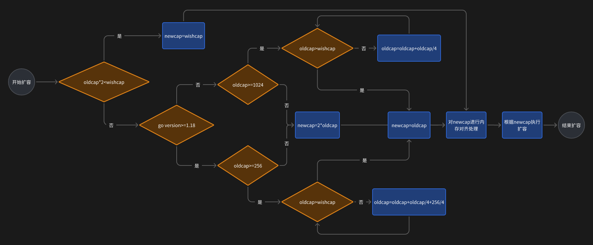

本篇文章旨在解密GoLang中的零零散散的小知识，为面试或者日常开发打下坚实的基础。
为什么选择GoLang
在一切开始之前我们先来聊聊GoLang相较于其他语言的优劣势。
| 优势 | 劣势 |
|---|---|
|
|
正因上述的诸多优势，Go语言才能得到越来越多开发者的青睐。
GoLang是面向对象的语言吗
官方的QA给出的回答是yes and no。也就是说“是也不是”，因为Go不会强制要求你用面向对象来写，但是它确实可以用结构体+组合等方式实现面向对象形式的编程。
为了介绍在GoLang中的面向对象编程，我们要了解面向对象的三大特性在GO中的表现：
- 封装： Go语言实现封装和其他语言的private、public等关键字不同，Go语言通过首字母大小写来控制访问权限。首字母大写表示公有，首字母小写表示私有。而对于包级别的变量和函数，只有在同一个包内才能访问。值得注意的是结构体中的小写字段对于同一个包内是可以访问的。
- 继承： Go语言没有继承的概念，但是可以通过结构体嵌套来实现类似继承的效果。或者也可以通过组合的方式，子结构体可以访问父结构体的字段和方法。
- 多态： Go语言通过接口来实现多态。接口是一组方法的集合，任何类型只要实现了接口中的所有方法，就可以被视为该接口类型。这样就可以实现不同类型之间的多态性。
嵌入和组合的区别
有很多人不知道嵌入和组合的区别，这里澄清一下。
请看如下代码：
type s1 struct {
a int
}
type s2 struct {
s1 // 嵌入
b int
}
type s3 struct {
x s1 // 组合
c int
}
嵌入的情况下s2可以直接调用s2.a来访问对应的值，也可以调用s2.s1.a来访问a
组合的情况下s3只能通过s3.x.a来访问a
如果结构体有方法，那么也是同理。这些都可以用来实现继承。
make和new的区别
- make用于创建slice、map、channel，new用于创建基本数据类型和结构体
- make返回的是引用类型，new返回的是指针类型
- make分配内存后会进行初始化，new分配内存后不会进行初始化而是会清零
make和new的底层实现都是通过runtime.makemap和runtime.newobject来实现的。
你可能会好奇如果用new来创建一个slice、map、channel会怎么样？
答案是：会报空指针错误。除非你new完后又用make来初始化。
slice和array的区别
-
slice是所谓的“引用类型”，而array是值类型。
实际上Go语言中没有类似于C++中的引用类型，所有的引用类型的底层其实都是指针。
slice的底层实现包含三个字段：
- array：指向底层数组的指针
- len：切片的长度
- cap：切片的容量
-
slice和array的初始化方式不同。
slice的初始化方式是：
slice := []int{1, 2, 3}array的初始化方式是：
array := [3]int{1, 2, 3}区别在于数组初始化时需要指定长度，而slice不需要。并且slice可以通过make初始化，但是array则是可以用new来生成新对象。
-
slice可以动态扩容，而array不可以。
slice的扩容机制
在讲述具体的扩容机制的时候我们要先定义几个概念：
- oldcap：当前的容量
- newcap：最终确定的扩容目标容量
- wishcap：扩容的期望容量
扩容的逻辑如图：
图中所说的最后一步的内存对齐，实际上是Go语言为了减少CPU的内存访问次数，将内存通过一定的逻辑对齐到特殊值的操作。
这就是为什么有时候的实际扩容值和期望扩容值不一样。
for range的坑
for range其实有很多坑。。。。我们一个一个展开。
临时变量
在go 1.22.0 之前for i,v :=range slice 中，i，v的地址是不会发生改变的！也就是说整个循环用到的i，v都是同一个。
这就导致如果你在循环中用一个数组存储i，v的地址，那么这个数组中的所有元素的地址都是相同的。
举个例子：
package main
import "fmt"
func main() {
map1 := make(map[string]int)
map1["a"] = 1
map1["b"] = 2
map1["c"] = 3
keys := make([]*string, 0, len(map1))
values := make([]*int, 0, len(map1))
for key, value := range map1 {
fmt.Println(key, value)
keys = append(keys, &key)
values = append(values, &value)
}
fmt.Println(keys)
fmt.Println(values)
}
Go 1.22.0 输出结果是：
a 1
b 2
c 3
[0xc00008a030 0xc00008a050 0xc00008a070]
[0xc000096068 0xc0000960a0 0xc0000960b0]
Go 1.22.0 之前输出结果是：
b 2
a 1
c 3
[0xc000010200 0xc000010200 0xc000010200]
[0xc000016070 0xc000016070 0xc000016070]
值得一提的是两次顺序不同是因为遍历map是随机顺序的。
在go 1.22.0 之后，修复了这个“特性”，i，v的变量发生了改变，所以不会出现上述问题。
值得注意的是不仅仅是遍历slice，map，array，channel都会出现这个问题。当然这些问题也都在Go 1.22.0 之后得到了修复。
遍历map
实际上在遍历map的时候一定是无序的，因为Go语言的map底层实现是hash表，而hash表的特性就是无序的。
所以如果你需要有序的map，那么你需要使用slice来存储key，然后对slice进行排序。
值得一提的是map的无序遍历实际上是go官方刻意实现的，每次遍历都会随机决定一个初始bucket，从这个桶开始遍历，每次也会随机决定一个桶内遍历的起始位置，来增加随机性。但是一次遍历中每个桶的初始遍历位置是一样的。
遍历slice时插入值
在遍历slice时插入值，不会导致死循环。
因为每次for range的时候都会拷贝一份slice，注意不是深拷贝，而是浅拷贝。所以每次你遍历slice的时候插入值也不影响其len和cap自然不会导致死循环。
举个例子：
package main
import "fmt"
func main() {
slice := []int{1, 2, 3}
for i, v := range slice {
slice = append(slice, i)
fmt.Println(i, v)
}
fmt.Println(slice)
}
输出结果是：
0 1
1 2
2 3
[1 2 3 0 1 2]
可以看出遍历的时候插入值不会造成影响。
遍历slice时改变值
在遍历slice时改变值，会影响原slice!
这时因为for range做的是浅拷贝和原slice共用一个底层数组，所以改变值会影响原slice。
举个例子：
package main
import "fmt"
func main() {
// 遍历的时候改变值
slice := []int{1, 2, 3}
for i, v := range slice {
if i < len(slice)-1 {
slice[i+1] = v
}
fmt.Println(i, v)
}
fmt.Println(slice)
}
输出结果是：
0 1
1 1
2 1
[1 1 1]
可以看出遍历的时候改变值会影响原slice。
遍历slice时删除值
在遍历slice时删除值，会对结果有影响，但是是可以预测的。
因为for range做的是浅拷贝，所以其len和cap是固定的，所以删除值会影响原slice的输出，但是不会影响输出的个数。
举个例子：
package main
import "fmt"
func main() {
// 遍历的时候删除值
slice := []int{1, 2, 3}
for i, v := range slice {
if i < len(slice)-1 {
slice=append(slice[:i+1], slice[i+2:]...)
}
fmt.Println(i, v)
}
fmt.Println(slice)
}
输出结果是：
0 1
1 3
2 3
[1 3]
可以看出遍历的时候删除值会影响原slice。
之所以会输出两个3，是因为在输出0 1的时候，已经用append覆盖了2，但是临时切片的len和cap不变，所以会输出最后一个数，自然也就是是3。
又一次印证，for range 生成的临时数组和原数组是共用一个底层数组的，所以改变值会影响原数组。
Go语言的三种指针类型
大家都知道go语言有指针类型可以指向变量的内存地址。
但是go语言有三种指针类型，分别是：
-
普通指针类型
-
unsafe.Pointer
-
uintptr
他们有各自的区别和使用场景。
普通指针类型
普通指针类型就是我们常用的*int，*string等。
-
用于传递对应类型对象的地址，不能进行指针运算。
-
可以访问内存的值。
-
只能在底层类型一样的指针之间进行类型转化。
-
指向的内容不会被GC回收。
第三点可能不好理解，举个例子：
package main
import (
"fmt"
)
type myint int
func main() {
var a myint = 1
ap := &a
fmt.Println(*ap)
var app *int
app = (*int)(ap)
fmt.Println(*app)
}
这段代码中ap的静态类型是*myint，app的静态类型是*int，所以虽然ap和app的底层类型都是int，但是他们的静态类型不同，必须进行类型转化后才能赋值。
但是如果二者的底层类型不一样，就完全不能赋值。
举个例子：
package main
import (
"fmt"
)
type myint int
func main() {
var a myint = 1
ap := &a
fmt.Println(*ap)
var app *float64
app = (*float64)(ap)
fmt.Println(*app)
}
这段代码会报错，因为底层类型不一样，不能进行类型转化。
unsafe.Pointer
unsafe.Pointer是go语言的通用指针类型，可以指向任何类型的内存地址。
-
可以保存任何类型对象的地址，不能进行指针运算。
-
不能访问内存的值。
-
用于底层类型不同的指针之间的类型转化。
-
指向的内容不会被GC回收。
第三点其实指的是，如果你非要把两个指向完全不同底层类型的指针相互赋值的话，就需要用unsafe.Pointer来做中间桥梁。
例如，上面说到的普通类型指针会报错的代码可以这样改写：
package main
import (
"fmt"
"unsafe"
)
type myint int
func main() {
var a myint = 1
ap := &a
fmt.Println(*ap)
var app *float64
app = (*float64)(unsafe.Pointer(ap))
fmt.Println(*app)
}
可以看到通过unsafe.Pointer的转化就可以将一个int类型作为底层的指针赋值给float64类型的指针。
请注意，其余的三个特点也非常重要，这是unsafe.Pointer与普通类型指针和uintptr的主要区别。
uintptr
很多人以为uintptr是指针，其实不然，它不过是一个uint，和指针类型的大小相等罢了，它是用来指针运算的工具。
-
可以和unsafe.Pointer相互转化，可以进行指针运算。
-
不可以访问内存的值。
-
不算指针，自然不存在所谓的指针类型转化，它就是一个整数类型。
-
指向的内容会被GC回收。
所以其实uintptr就是一个和指针大小相等的整数类型。可以进行指针运算，并且不能持有对象，指向的内容会被回收。
接口底层原理
接口在Go语言中是一种类型，它定义了一组方法。任何实现了这些方法的类型都可以认为是实现了接口。
本章节将详细讲述interface的底层原理。
Interface在底层实现其实对应两个结构体：
-
iface：非空接口
-
eface：空接口
eface
所谓空接口，就是没有定义任何方法的接口。
所有类型都实现了空接口，所以空接口可以存储任何类型。
eface的结构体定义如下：
type eface struct {
_type *_type
data unsafe.Pointer
}
其中_type是类型信息，data是数据指针。
请注意_type字段在go 1.21.0之前和之后不太一样，本文章基于1.22.0版本。
在1.22.0版本中type字段如下：
type Type struct {
// 类型的大小(字节数)
Size_ uintptr
// 类型中包含指针的字节数(从开始位置算起)
// 用于 GC 扫描对象时知道需要扫描多少字节的指针
PtrBytes uintptr
// 类型的哈希值，用于快速比较类型是否相同
// 避免在哈希表中重复计算
Hash uint32
// 类型的额外标记信息，比如:
// - 是否是命名类型
// - 是否有 uncommon type 信息
// - 是否可以用规则内存比较
TFlag TFlag
// 类型的对齐要求(字节数)
Align_ uint8
// 当此类型作为结构体字段时的对齐要求
FieldAlign_ uint8
// 类型的具体分类(如 int、string、struct 等)
Kind_ uint8
// 用于比较该类型两个值是否相等的函数
Equal func(unsafe.Pointer, unsafe.Pointer) bool
// GC 相关的类型数据:
// - 如果设置了 KindGCProg，则指向 GC 程序
// - 否则是指针位图，用于标记哪些字节包含指针
GCData *byte
// 类型名称的偏移量，用于获取类型的字符串表示
Str NameOff
// 指向该类型的指针类型的偏移量
// 例如: 如果这是 int 的类型信息，PtrToThis 指向 *int 的类型信息
PtrToThis TypeOff
}可以看出，空接口其实就是只存储了类型信息和数据指针。
所以空接口可以存储任何类型，因为任何类型都实现了空接口。
iface
非空接口，就是定义了方法的接口。
iface的结构体定义如下：
type iface struct {
tab *itab
data unsafe.Pointer
}
其中tab是接口表，data是数据指针。
tab的结构体定义如下：
type itab struct {
// 指向接口类型信息的指针
// 包含了接口定义的所有方法信息
inter *interfacetype
// 指向具体类型信息的指针
// 包含了实现接口的具体类型的信息
_type *_type
// 类型哈希值，从 _type.hash 复制而来
// 用于类型断言时快速判断类型是否匹配
hash uint32
// 4字节填充，用于内存对齐
_ [4]byte
// 方法表，存储具体类型实现的接口方法地址
// 虽然声明为 [1]uintptr，但实际大小是可变的
// 包含了接口所有方法的具体实现地址
// fun[0]==0 表示该类型没有实现这个接口
fun [1]uintptr
}
type InterfaceType struct {
// 嵌入基础的 Type 结构
// 包含了类型的通用信息如大小、对齐方式等
// 同上面我们提到的_type结构体
Type
// 接口定义所在的包路径
// 例如: "encoding/json"
// 用于区分不同包中的同名接口
PkgPath Name
// 接口定义的所有方法列表
// 按方法名的哈希值排序，便于快速查找
Methods []Imethod
}
与空接口最大的区别就是，非空接口用itab存储一个接口表，接口表中有接口类型的详细定义，也有具体实现类型的详细定义。
在接口类型的详细定义中包含接口的类型信息（接口也是一种类型）（InterfaceType.Type），接口的包路径（InterfaceType.PkgPath）和接口定义的未实现的方法（InterfaceType.Methods）。
在具体实现的类型的定义中包含该类型的全部类型信息(itab._type)和所有具体实现的函数内容（itab.fun）。
接口实现
通过了解两种接口的结构体定义，我们可以更好地理解接口的本质。实际上，接口是一个包含了实现类型、接口类型、实现类型数据、实现方法和定义方法的数据结构。
在go语言中实现接口时隐性的。只需要实现所有接口定义的方法，就视为实现了这个接口
任何一个实现了接口的数据结构，都可以赋值给静态类型为对应接口类型的变量。
这个变量只能调用接口定义的方法，不能调用实现类型的方法。也不能访问实现类型的数据。
itab缓存
其实可以发现，同一个接口+同一个实现类型对应的itab是唯一的。所以如果你创建了多个变量赋值到接口类型，每一次都创建一个新的itab的话，是不是太浪费了？
例如：
package main
import "fmt"
type ai interface {
show()
}
type a struct {
a int
}
func (a *a) show() {
fmt.Println(a.a)
}
func main() {
var a1 a = a{a: 1}
var a1i ai = &a1
var a2 a = a{a: 2}
var a2i ai = &a2
var a3 a = a{a: 3}
var a3i ai = &a3
a1i.show()
a2i.show()
a3i.show()
}
这段代码中，如果每次将a类型赋值给ai类型都要创建新的itab的话就太麻烦了。
所以go语言中，如果两个接口类型和实现类型都相同，那么就会使用同一个itab。
这就是itab缓存。
具体而言，在go语言中itab的缓存用这样一个结构体存储：
type itabTableType struct {
// entries 数组的长度
size uintptr
// 当前已填充的条目数量
count uintptr
// itab 指针数组
entries [itabInitSize]*itab
}
entries虽说时数组其实实现方式类似于哈希表，他是通过接口类型和实际类型分别hash后的异或值来为key进行存储的。hash冲突处理方式则是采用开放寻址法。
当查找一个itab是否存在的时候，步骤如下：
-
通过接口类型和实际类型分别hash后的异或值来计算出在entries数组中的索引。
-
如果entries[index]为空，则说明该itab不存在。
-
如果entries[index]不为空，则说明该itab存在。注意此时有可能发生hash冲突，要再次比较itab记录的type值和现在正在查找的type值是否相同。
接口比较
接口之间比较
不同接口之间比较会报错。除了空接口，空接口可以和任何一个接口值或者类型值比较，此时只比较实际数据类型和实际数据值。
举个例子：
package main
import "fmt"
type ai interface {
showa()
}
type bi interface {
showb()
}
type a struct {
a int
}
func (a a) showa() {
fmt.Println(a.a)
}
func (a a) showb() {
fmt.Println(a.a)
}
type b struct {
b int
}
func (b b) showa() {
fmt.Println(b.b)
}
func (b b) showb() {
fmt.Println(b.b)
}
func main() {
var aa ai = a{a: 1}
var bb bi = b{b: 1}
fmt.Println(aa == bb)
}
最后一句会报错，因为ai和bi都不是空接口，并且ai和bi的接口类型不一样。
再来看这个代码：
package main
import "fmt"
type ai interface {
showa()
}
type bi interface {
showb()
}
type a struct {
a int
}
func (a a) showa() {
fmt.Println(a.a)
}
func (a a) showb() {
fmt.Println(a.a)
}
type b struct {
b int
}
func (b b) showa() {
fmt.Println(b.b)
}
func (b b) showb() {
fmt.Println(b.b)
}
func main() {
var aa ai = a{a: 1}
var bempty interface{} = b{b: 1}
fmt.Println(aa == bempty)
var aempty interface{} = a{a: 1}
fmt.Println(aa == aempty)
}
输出结果为：
false
true
这是因为，此时bempty是空接口类型其对应的实际类型是b值为1，aempty是空接口类型其对应的实际类型是a值为1。他们和aa比较都不会报错，因为空接口类型可以和任何一个值比较（不论是接口值还是实际类型值）。
由于bempty和aa的实际类型不同，即使值一样也会返回false，相反aempty和aa的实际类型相同，所以返回true。
所以可见，接口之间的比较不仅仅要比较接口类型，也要比较实际类型和实际值。当然空接口是个特例，它和任何东西都能比较。
例子：
func main() {
var a = 1
var b interface{} = func() {
fmt.Println("aaa")
}
fmt.Println(a == b)
}
输出结果为：
false
可以看出，虽然结果是显而易见的false，但是这个比较却并没有报错！
值得注意的是，接口之间虽然可以比较是否相等，但是却不能比较大小。
接口和类型之间比较
接口和类型之间的比较，会把类型赋值给interface{}空接口后执行两个接口的比较。进而就转化为了实现类型的类型与数值比较。
例如：
package main
import "fmt"
type ai interface {
showa()
}
type a struct {
a int
}
func (a a) showa() {
fmt.Println(a.a)
}
func main() {
var a1 ai = a{a: 1}
var a2 = a{a: 1}
var a3 = 1
fmt.Println(a1 == a2)
fmt.Println(a1 == a3)
}
输出结果为：
true
false
可以看出，a1和a2的实际类型和实际值都相同，所以返回true。
a1和a3的实际类型和实际值不同，所以返回false。